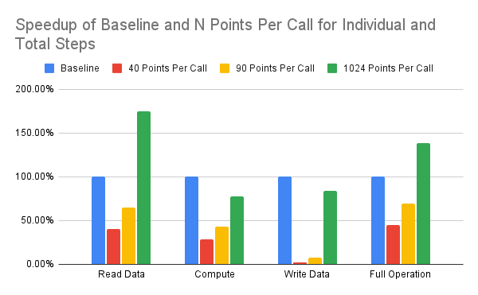
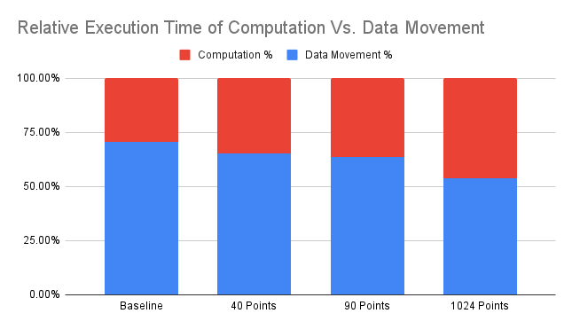

SmartSSD is a Computational Storage Device that includes a 4TB Samsung NAND SSD device and a Xilinx Kintex Ultrascale FPGA in one package. This device can act as a normal storage device to the host, directly interfacing between the host and FPGA like a normal accelerator, or between the SSD device and FPGA to utilize low latency memory transactions by using a PCIe switch within the SmartSSD device. As part of a semester long project for a graduate course at Iowa State University, CPRE 563, me and a partner developed an accelerator design for SmartSSD which would be targeted towards neural network image inferencing. The goal was to utilize the high bandwidth, low latency memory transactions directly between the SSD and FPGA devices, while synthesizing an accelerated FPGA kernel by utilizing Vitis HLS with C++ code for a multiply and accumulate function, which could be used to generate convolution points for a neural network inference.
Deliverables
This project first started by verifying the setup of SmartSSD on the host device, which was a server that we gained access to for this project. We created a new partition on the SSD storage and ran our baseline neural network inference C++ code to measure initial timing results for read, computation, and write latencies for a full neural network convolution layer. By measuring the individual metrics, we could compare the latencies of data transfer and computation time independently to the timing results with the FPGA application. It should be noted that the FPGA is NOT involved in this process, since we are trying to establish a baseline result without any hardware acceleration with the FPGA, either from the Host or SSD device.
Next, we researched how to optimize our convolution kernel design in Vitis HLS by utilizing features such as loop unrolling or HLS Pragmas, in which we could define how our read/write ports would interface with the BRAM memory on the FPGA. We started by only computing 1 point, but after poor timing results and low utilization of the on-chip FPGA BRAM memory, we expanded our kernel to compute 1024 points at once, which would multiply the elements of two 800 element 1-D array together, and sum each multiplied output together, to form a MAC unit. By increasing the number of points in the kernel, we increased the bandwidth and utilization between the SSD and FPGA, while also using more of the FPGA BRAM, which reduced latencies for both our computation times and read/write latencies.
After synthesizing our design into a kernel from C++ code, we had to create a project using Vitis, which was a completely separate tool than Vitis HLS to run our Host code to interface with SmartSSD. This involved creating memory buffers in the host code, so that we could read/write to the SSD to setup test data, and a separate set of buffers between the SSD and FPGA, so we could measure the latency delays between memory transactions WITHOUT host code interference. A set of software and hardware simulations were available to run, in which we could verify the correct kernel output from the FPGA. After that, we provided the path for the mounted SSD partition and read the array data directly from the SSD to the FPGA and collected timing results.
Below is a speedup table comparing the read, compute, and write latencies for the baseline operation and multiple optimization iterations of the SmartSSD application, which includes varying amounts of point computations in the kernel. The speedup is normalized to the baseline C++ code which was ran without the FPGA accelerator or interface. The only design to achieve an overall speedup is the final optimization using 1024 points per kernel call, which uses the maximum amount of BRAM memory within the FPGA, attempting to maximize the data bandwidth of the read/write transactions. The kernel needs to input 1600 32-bit floating point values per point, and writes back 1 32-bit floating point value. For 1024 points, we can utilize higher bandwidth reads, which is why the speedup for reading the data is so large. Due to pipeline delays with floating point computations, the kernel computation is still slower than the baseline host CPU, due to the hardware complexity of floating point adders and multipliers. This was disappointing to see, since we also utilized loop unrolling to add parallelization to our kernel. Perhaps in the future multiple kernels could run in parallel to compute the 1024 points faster, since not all of the FPGA logic blocks were used within the SmartSSD device.

While we achieved an overall speedup in terms of execution time, we also reduced the percent of time spent on data movement, as seen between the Baseline and resulting 1024 points per call. As we added more points per kernel call, the % of time spent reading data decreased relative to the overall execution time. This shows that not only by adding FPGA hardware acceleration to speed up our design, we can reduce the amount of memory latency delay by applying this acceleration within the SmartSSD device.
